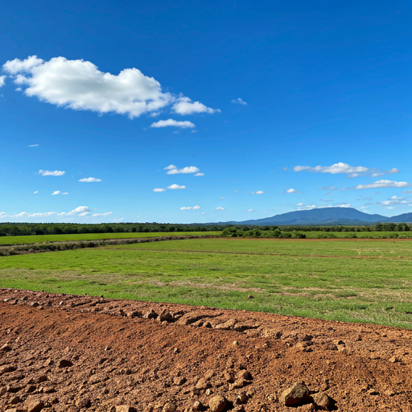

Sistema de
Irrigação
Sistemas de irrigação e acessórios a pronta entrega para todo Brasil. Inovação e eficiência para garantir a melhor produtividade da sua lavoura.
Linha completa de Tubos e Conexões para
Sistemas de Irrigação
A linha de irrigação possui tubos de PVC que podem estar disponíveis para atender plantações e pastagens, de granulares, armazenamento, construção e distribuição conexões e acessórios, com preços acessíveis, focados no uso racional de água.

Linha completa de Tubos e Conexões
Predial
Nossa linha de tubos prediais foi desenvolvida para proporcionar segurança, resistência, durabilidade e precisão. As linhas soldável e roscável para conduzir água fria em obras residenciais, industriais e comerciais, atendendo sempre aos mais exigentes padrões de qualidade.

Linha completa de produtos para
Poços Artesianos
A Linha de Poço Artesiano fabricada em PVC, apresenta com alta resistência mecânica, quimicamente inerte, alta estanqueidade, resistente e de fácil manuseio. Produto totalmente reciclável, não agride o meio ambiente, nem transmite qualquer tipo de característica físico-química na água a ser captada.

Linha completa de
Acessórios
Disponibilizamos toda linha de acessórios para um sistema de irrigação completo. Cap rosca, registros, válvulas, curvas, tees, parafusos, luvas, engrenagens, controladores, ventosas, tubo de saída e caça.

A Comercial Canaã é pioneira no comércio de material de irrigação agrícola na região Centro Serrana do ES.
Há décadas fornecendo soluções de ponta e suporte técnico especializado para o produtor rural da nossa região.